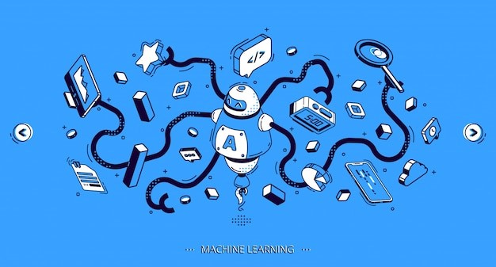

- Machine Learning Engineer
A machine learning engineer is an engineer that uses programming languages such as, Python, Java, Scala, etc., to run experiments with the appropriate machine learning libraries. - Data Scientist
Data scientists analyze large amounts of data to make valuable insights on where action can be taken and solve the problems. - Human Centered Machine Learning Experts
Machine Learning is all about teaching machines to identify patterns from data and predict outcomes without being “programmed.” Based on our watched shows, the ML system derives a pattern, combines it with human-centric thinking, and displays a prediction based outcome. - Business Intelligence Developer
A Business Intelligence developer has a strong background in Machine Learning and Data Science based applications and develops and studies business and market trends. They work with complex data and design them into models that help a business to grow. - And much more career options.
What is Machine Learning?
Machine learning is a branch of Artificial Intelligence that focuses on data and algorithms to enable machines to learn a task with minimal human intervention.
Machine learning is modern innovation that has enhanced day to day life. It's a subset of artificial intelligence (AI), which focuses on using statistical techniques to build intelligent computer systems to learn from available databases..

Why this course?
This course would start from scratch, if you wanted to learn machine learning we will provide you guidance about how to start then will give you practical project based insights of machine learning so that you will be able to build ML project, once you will be able to develop ML projects you can definitely clear ML interviews.
Skills Required:
- Programming
- Probability & statistics
- Data modeling
- Machine learning algorithms
- System Design
- And much more to learn
Career Opportunities with this course:
We can say machine learning is the adding steps toward Artificial Intelligence. Following are some areas where you can work in this field,Once the course done, we will keep scholarship competition, in this competition students will have to create project with their creativity, so that they can use the same at their home.Based on their creativity we will have gifts too to inspire them to do more.
Contact us for course details : contact@irabot.in